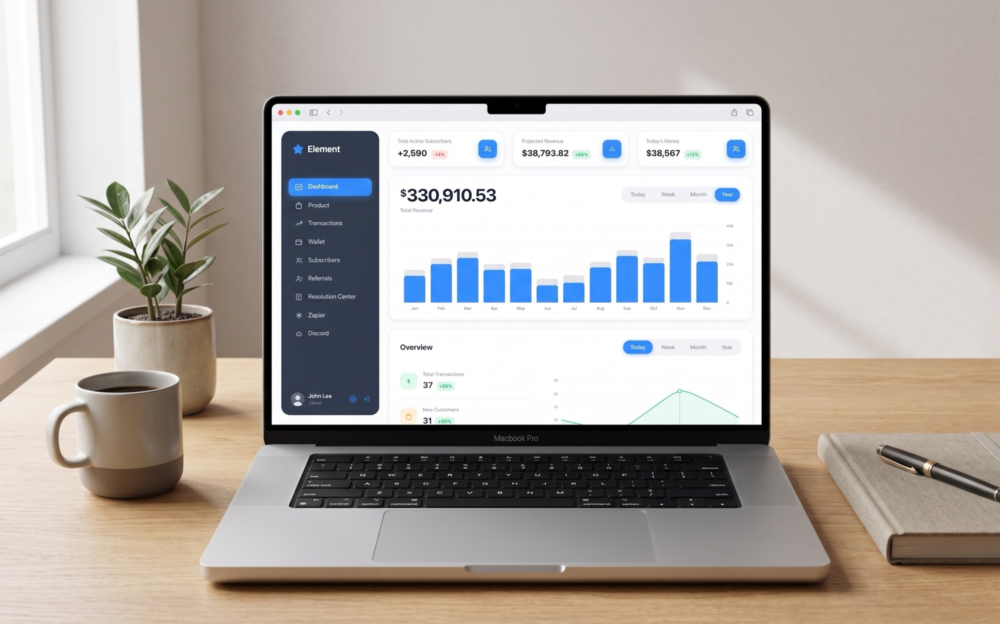
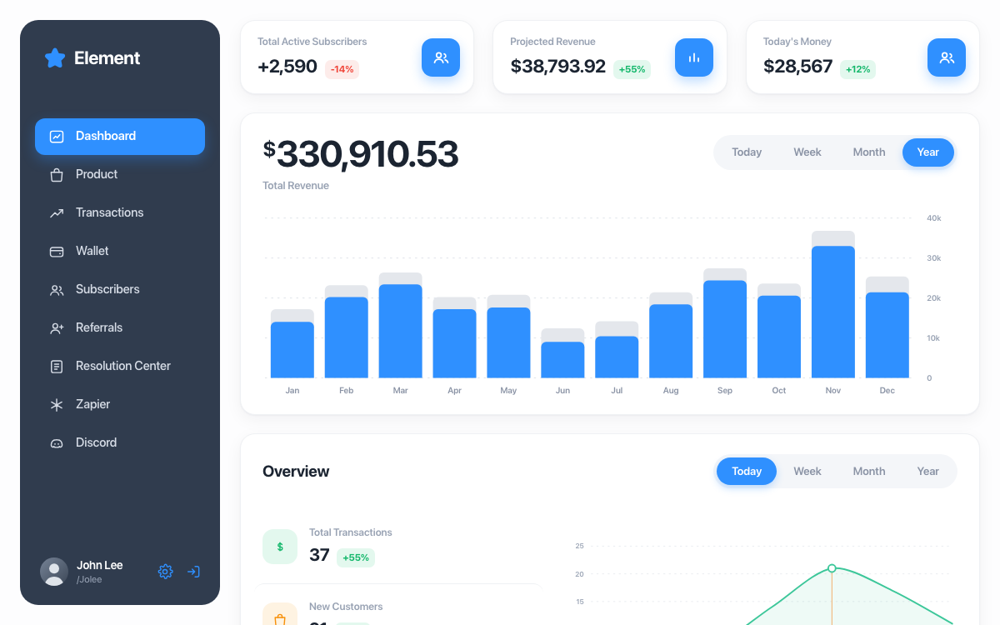
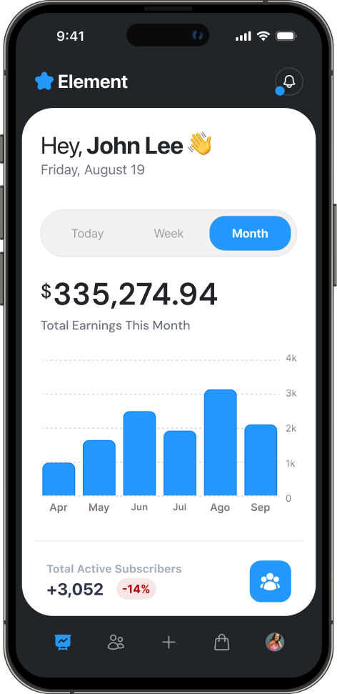
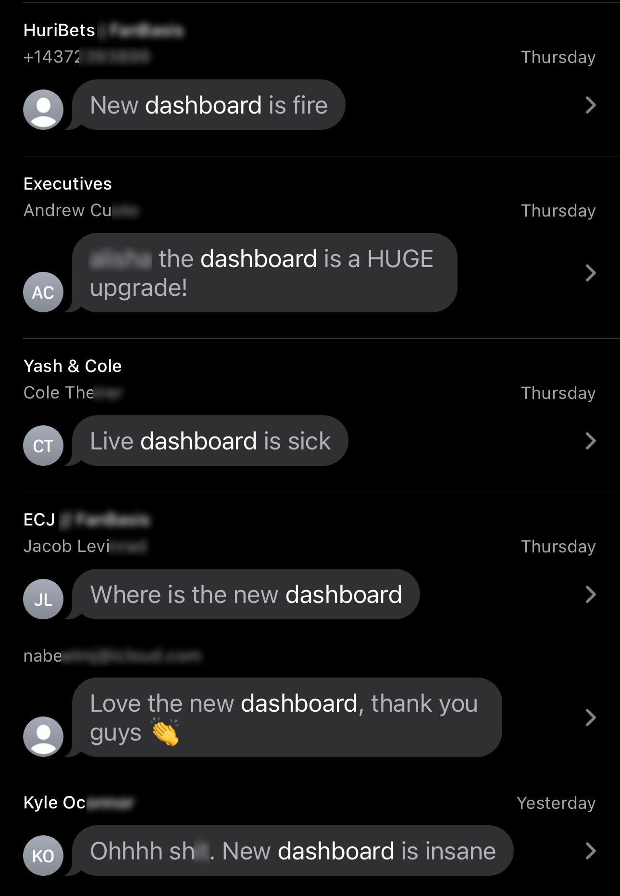

Dashboard Element
Um dashboard redesenhado em torno dos números que os usuários realmente precisavam

- Atuação
- Único product designer, de ponta a ponta
- Escopo
- Redesign de dashboard
- Período
- 2024 a 2025
- Plataforma
- Web responsiva
Os números que importavam estavam escondidos
Element é um nome fictício, por confidencialidade. O dashboard estava datado, e os números que realmente pesavam nas decisões ficavam a vários cliques de distância, perdidos em um mar de dados.
Acompanhar o que acontecia na plataforma também era difícil. Não dava para ver vendas e disputas em tempo real, então os usuários precisavam garimpar essas informações depois.
Descobrir os números que movem as decisões e construir tudo em volta deles
Conduzi o redesign entre 2024 e 2025, começando pelos números, e não pelo layout.
- 01
Pesquisa
Mapeei quais números levavam de fato a uma decisão e quais só ocupavam espaço.
- 02
Wireframes
Reestruturei a tela em torno desses números, com espaço para a atividade em tempo real.
- 03
Validação
Testei o novo layout com usuários antes de partir para o visual.
- 04
UI final
Fechei tipografia, cores e estilo dos gráficos nas telas que foram para produção.
Os números que importam em destaque, e a plataforma em tempo real ao lado
Trouxe para o primeiro plano os números que movem as decisões e criei, ao lado deles, um monitor de atividade em tempo real, para os usuários acompanharem vendas, disputas e outros eventos na hora em que acontecem.


Visão geral
Menu lateral, três cards de indicadores com contagem animada e a receita do ano em um único gráfico.
Mobile
Um design pensado para o mobile, e não uma versão espremida, com o seletor de período e o gráfico em uma única tela.
Resultado mensurável, e aprovação já no primeiro dia
No primeiro dia no ar, os clientes já falavam que era um salto enorme.
A resposta foi imediata: os usuários disseram confiar mais nos números e achar tudo mais fácil de ler.

O redesign contribuiu para 20% a mais em conversões.
Veja os números em ação
Alterne entre Today, Week, Month e Year e veja o gráfico se redesenhar, passe o mouse sobre uma linha para destacá-la ou só acompanhe os indicadores subindo.
Ver protótipoSua empresa está pronta para decolar?
Estou disponível para vagas full-time e procuro um time onde eu possa somar dez anos de experiência em product design e gerar impacto de verdade. Se vocês estão contratando, vou adorar saber o que estão construindo.